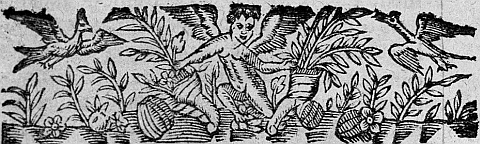
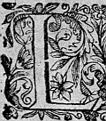
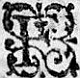
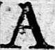
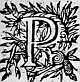

LA SECONDE
PARTIE D'ASTREE.
De Messire Honoré d'Urfé.
LIVRE PREMIER
Édition de 1610, 1.
Édition de Vaganay, p. 7.

LA LUNEη estoit desja pour la deuxiémedeuxiesme fois sur le milieu de son cours, depuis que Celadon eschapé des mains de Galathee, et n'osant se presenter devant les yeux de la Bergere Astree, pour obeïr au commandementη qu'elle luy en avoit fait, s'estoit renfermé dans sa caverne. Et quoy que trois moisη fussent desja presque écoulezescoulez depuis le jour de sa perte, si est-ce que le déplaisirdesplaisir que sa Bergere en ressentoit, estoit encore si vif en son ame, que quelque prudence qui futfust en elle, elle ne pouvoit toutesfoistoutefois le cacher à ceux qui vouloient y prendre garde. Et sembloit que le Ciel, par une juste punition, refusast à sa douleur le remede
que le temps a de coustume de rapporter à tous ceux qui ont plus de sujet de se douloir : car au lieu d'adoucir les aigreurs de ses ennuis, tous les jours elle découvroitdescouvroit de nouvelles occasions de regret. Et quand sa memoire, divertie ailleurs par les compagnies qui la venoient visiter, cessoit quelquesfoisquelquefois de luy representer les causes de ses deplaisirsdesplaisirs , ses yeux en eschange, par tout où ils s'addressoientadressoient , ne voyoient que des objets tellement ennuieux, que pour ne les voir elle demeuroit le plus souvent dans sa cabane. Mais ce qui l'affligeoit davantage, c'estoit qu'elle estoit privee de cette consolation, qui se trouve encore parmy les plus grandes infortunes. Jeη veux dire, qu'elle ne pouvoit rejetter le sujet de sa faute que sur elle mesme, ny trouver les moyens de s'en excuser de quelque biays qu'elle peutη tourner cetcest accident. Et ne faut douter qu'il luy en eut esté entierement impossible de continuer sa vie surchargee de tant d'ennuisennuys, si l'amitié de Diane et de Phylis ne luy euteust aydé à les supporter ; la presence de la personne aymee estant l'un des plus souverains remedes que la tristesse puisse recevoir. Aussi ces cheres amies n'en estant pas ignorantes, avoient un si grand soin de cestecette Bergere, que des la pointe du jour l'une ou l'autre, et bien souvent toutes deux la venoient trouver, et comme par force l'arrachoient de sa cabane, et la conduisoient par les endroits les plus reculez, de peur que la veuë de ceux où elle souloit voir Celadon ne luy renouvellast
la memoire de sa fascheuse perte.
Et puis à l'envy s'estudioient à qui, pour la
divertir, luy feroit un meilleur conte, ou proposeroit
quelque agreable jeu pour passer plus doucement le
reste de la journee : de sorte qu'en despit de la
fortune ces gentillesgentiles Bergeres desroboient tousjours
quelques heures au desplaisir d'Astree, pour les
metre en un meilleur usage.
Silvandre d'autre costé feignant de rechercher
Diane par gageure, en devint de telle sorte amoureux,
qu'il servit longuementη
d'exemple à tous ceux de sa
contree, et leur enseigna à ses despens, qu'Amour ne souffre guere qu'on se mocque de luy : car il
rencontra en ceste Bergere tant de causes d'amour,
qu'il estoit tout estonné de l'avoir veuë si long temps sans l'avoir aymee. Et quoy que la gageure, qui
estoit cause de la naissance de son affection, fut le
commencement de son mal, si ne s'en plaignoit-il
point, puis que sans offenser Diane elle luy donnoit
la liberté de luy raconter ses passions, la violence
de son amour estant telle, que s'il eust esté forcé
de la cacher, il luy eust esté impossible de vivre. Et
toutesfois quand il se r'appelloitrappelloit en soy-mesme, il
cognoissoit bien qu'il avoit fait un changement fort
desadvantageux : se souvenant de quel-heur il estoit
accompagné, lors que maistre absolu de ses pensees
il disposoit tout seul de sa vie et de ses desseins.
Combien de fois voulut-il avec la raison défaire les
premiers nœuds dont
il se sentoit lier en ce nouveau servage ? Combien de fois, voyant que la raison y estoit inutile, voulut-il les rompre avec la force d'une violente resolution ? Mais autant de fois qu'il s'y esseyaessaya , autant de fois reconneut-il que c'est en vain que l'homme s'efforce contre les ordonnances du Ciel, et que celuy est le plus avisé qui sçait mieux y ployer et conformer sa volonté. Ces considerations estoient cause que quand il ne pouvoit estre aupres de sa Diane, comme le matin et le soir, il estoit bien ayse de se retirer de toute compagnie, tant parce qu'il jugeoit toute autre ennuieuse, ne pouvant jouyr de celle qu'il desiroit, que pour avoir plus de loisir de consulter en soy-mesme librement, et juger qu'ellequelle estoit la volonté du Ciel, et par quelle voye il y η pourroit mieux parvenir. Et combien qu'il recogneut plus d'impossibilité à la poursuitte de son affection que d'apparence de la pouvoir continuer, si ne pouvoit-il jamais prendre aucune conclusion qu'à l'avantage de son Amour. Que s'il faisoit dessein de s'en retirer, ô que son cœur se faisoit promptement paroistre desobeissant ! Que s'il estoit d'advis de le continuer, quelles peines et quels martyres ne prevoyoit-il point ? - Que ferons-nous donc en fin, disoit-il, Silvandre, puis que la poursuitte et la retraitte nous sont egalement impossibles ? Faisons, disoit-il, en se respondant, ce que le Ciel veut que nous fassions. Pourquoy peut-on juger que les Dieux l'ayent faictefaitte si belleη ,
sinon pour estre aymee de
ceux qui la verront ? Et puis que de poursuivre et de
nous retirer il nous est egallement impossible,
elisons pour le moins des deux celuy qui est plus
selon la volonté du Ciel et selon la vostrenostre
η
. Estant
si belle il ordonne qu'elle soit aymee, et quant à
moy je consentiray plustost à me retirer de la vie que
de son service. Que faut-il donc que nous consultions
davantage, puis que le Ciel et nostre volonté
appreuvent une si bonne resolution ?
De fortune quand il tenoit ces discours en soy mesme
il se trouva sur le bord de la delectable riviere de
Lignon vis à vis de ce rocher, qui estant frappé de
la voix, respond si intelligiblement aux derniers
accentsaccens . Cela fut cause qu'apres que ces pensees luy
eurent longuement roulé par l'esprit, presque comme
revenant d'un profond sommeil : - Mais pourquoy, dit-il,
nous allons nous consommant et embroüillant en ces
contrarietez ?
Echo qui habite en ce rocher, si nous
l'en enquerons, nous en dira bien ce qu'elle en a ouy
de la bouche mesme de ma Bergere, qui est l'Oracleη
le
plus certain que je puisse consulter.
Et lors relevant la voix il luy parla de cetteceste sorte.
ECHO.
STANCES.

FIlle de l'air qui ne sçaurois rien taire,
De ces rochers hostesse solitaire,
Où vont les cris que je vaisvas esmouvant ?
Au vent.
Et quel crois-tu que ce cruel martyremartire ,
Que plein d'Amour mon cœur va concevant,
Devienne en fin aux maux que je souspire ?
Pire.
II.
Que feroit donc cet œil qui me desarme
Par sa douceur de toute sorte d'arme,
Et qui promet m'aymer infiniment ?
Il ment.
Mais s'il est vray qu'il mente, quel remede
Nous faudra-t'il pour sortir promptement
De cet abus qui trompeur nous possede ?
Cede.
III.
Comment ? ceder un tel bien à quelque autre,
Qu'Amour ordonne en effecteffet
qu'ilqui soit nostre !
Qui plus que moy voit-elle volontiers ? Un tiers
.
Un tiers ? Echo, c'est un cruel langage,
Mais s'il est vray qu'elle ayme mieux un tiers,
Au lieu d'amour qu'auroit un grand courage ?
Rage.
IV.
Nimphe qui sents dedans ces roches creuses
Quel est le mal des peines amoureuses,
N'auray-je donc jamais allegementalegements ?
Je ments.
Comment, Echo, n'est-ce point un blaspheme.
De t'accuser et dire que tu ments ?
Ce que j'entens est-ce bien ta voix mesme ?
Ayme.
V.
C'est bien ta voix qui frappe mes oreilles,
Mais ce secret, Nimphe qui me conseilles
L'as-tu disdy moy de ma Diane ouy ?
Ouy.
Mais de l'aymer, helas ! c'est peu de chose,
Si d'elle aymé d'elle je ne jouy
Pour un tel heur qu'est-ce qu'on me propose ?
Ose.
VI
Le Ciel noircynoir cy de tempeste et d'orage
Ne peut d'effroy m'abattre le courage
Mon cœur ne craint tous ces estonnemens.
Ne ments.
Je ne meursments
η
point ny ne suis temeraire.
J'apprens d'Amour ces beaux enseignemensenseignements .
Faut il bienrien plus pour un si grand mystere ?
Taire.
VII.
Je me tairay, plustost ma voix pressee,
Souspirera ma mort que ma pensee,
Amant secret comme Amant valeureux.
Heureux.
Heureux cent fois aymé de ceste belle,
Mais d'où sçay-tu que son cœur genereux
Sera vaincu
si je luy suis fidelle ?
D'elle.
Encore que le Berger n'ignorast point que c'estoit luy mesme qui se respondoit, et que l'air frappé par sa voix rencontrant les concavitez de la roche, estoit repoussé à ses oreilles : si ne laissoit-il de ressentir une grande consolation des bonnes responces qu'il avoit receuës, luy semblant que rien n'estant conduit par le hasard, mais tout par une tres-sage providenceη , ces paroles que le rocher luy avoit renvoyees aux oreilles n'avoient esté prononcées par luy à dessein, mais
par une secrette intelligence du démon qui l'aymoit, et qui les luy avoit mises dans la bouche : Et en cestecette opinion il suivoit la coustume de ceux qui ayment, qui d'ordinaire se flattent en ce qu'ils desirent, et trouvent des apparences d'espoir où il nyn'y a point d'apparence de raison. Apres avoir remercié le genie de ce rocher et les Nimphes η de Lignon, il faisoit dessein d'aller entendreattendre η sa Bergere au carrefour de Mercure, parce que c'estoit par là qu'elle avoit accoustumé d'aller chez Astree, et il luy sembloit que l'heure en approchoit, la moitié du jour estant desja passee : mais lors qu'il en vouloit prendre le chemin, il vidη assez pres de luy la Nimphe Leonide, et le gentil Paris, qui ayant ouy sa voix avoient tourné leurs pas vers luy, tant pour sçavoir des nouvelles des Bergeres, Astree, Diane, et Phylis, que pour avoir le plaisir de sa compagnie : car encore que Paris cogneustcognust bien l'affection qu'il portoit à Diane, si ne laissoit-il de l'aymer et de l'estimer beaucoup, ne pouvant croire que ceste sage Bergere le deust jamais preferer à luy à cause de la grandeur d'Adamas, qui pour sa qualité de grand Druyde estoit apres Amasis, le plus honoré par toute ceste contree, ignorant qui ne sçavoit pas que l'Amour ne se mesure jamais à l'aune de l'ambition ny du merite, mais à celle de l'opinion seulement. Sylvandre qui estoit plein de civilité comme ayant esté nourry parmy les escolesescholesη η des Phocenses et Massiliens, encore que la venuë de
Paris ne luy fut gueres agreable, sçachant bien qu'Amour le conduisoit parmy les bois, et un Amour encore qui estoit à son desavantagedesadvantage , ne laissa de s'avancer vers luy et vers la NympheNimphe pour les saluër. - Je ne vous demande pas, luy dict Leonide en sousriant, quelles estoient les pensées qui vous entretenoient en ce lieu solitaire, sçachant assez que celles qui vous accompagnent ne sont gueresguere sans Diane : mais je voudrois bien sçavoir de vous pourquoy vous les preferez à sa veuë, et quelle est l'occasion qui les vous rendη plus douces que sa presence. - Je ne nieray point, dit-il, Madame, que ces agreables pensées dont vous me parlez ne m'ayent tenu fidelle compagnie, aussi bien en ce lieu retiré qu'elles font par tout où je me trouve esloignéeslongné de Diane, mais que je les tienne plus cheres que le bien de sa veuë, permettez moy je vous supplie de vous dire qu'encor que par raison cela devroit estre, toutesfois je ne l'ay point encores peu obtenir sur moy mesme. Que si vous me voyez icy sans elle, ce n'est que pour passer plus doucement en la compagnie de mes imaginations les heures que son repas me contraintcontrainct de perdre loing d'elle : et d'effecteffet lors que vous estes arrivée je m'acheminois au carrefour de Mercure, parce que voicy le temps qu'elle part de sa cabane pour aller vers Astrée, et je faisois dessein de l'y accompagner. - Nous sommes venus, respondit Leonide, avec resolution de donner le reste du jour à ces belles Bergeres, mais
quand cela ne seroit pas,
nous penserions de faire une faute qui ne seroit pas
legere ny peu des-agreable à l'Amour, si nous
retardions vostre voyage : c'est pourquoy, Berger, vous
nous y conduirez, et par les chemins nous direz s'il
vous plaist, pourquoy vos pensées vous devroient estre
plus cheres que la presence mesme de celle qui les
fait naistre ? puis que quant à moy je le trouve tant
éloignéeslongné de raison que je ne sçaurois me figurer que
cela puisse estre.
A ce mot Silvandre, pour luy obeïr, leur ayant fait
prendre un
sentier, qui traversant un grand pré abregeoit de
beaucoup le chemin, reprint ainsi la parole : - Ce que
vous me demandez, grande
Nymphe, n'est pas difficile
d'estre entendu pourveu qu'il soit pris comme il doit
estre, parce qu'il est bien certain que les yeux sont
les premiers qui donnent entree à l'Amour dans nos
ames. Que si quelques uns sont devenus amoureux en
oyant raconter les beautez et les perfections des personnes absentes, ou ç'a esté une Amour qui
n'a pas esté de duree ny violente (estant plustost
une peinture d'Amour que une vraye Amour) où l'esprit
qui l'a comceuëla conceuë
a quelque grand deffaut en soy mesme,
d'autant que l'ouyeη
raporte aussi bien les faussetez
que les veritez, et le jugement qui se fait sur un
rapport incertain, ne sçauroit estre bon ny proceder
d'une ame bien posee : mais tout ainsi que ce qui
produit quelque chose n'est pas ce qui la nourrit et
qui la met apres
en sa perfection, de mesme devons nous dire de l'Amour, parce que si nos agneaux naissent de nos brebis, et qu'au commencement ils tirent quelque legere nourriture de leur laict, ce n'est pas toutesfois ce laict qui les met en leur perfection, mais une plus ferme nourriture qu'ils reçoivent de l'herbe dont ils se paissent. Aussi les yeux peuvent bien commencer, et eslever une jeune affection, mais lors qu'elle est creuë, il faut bien quelque chose de plus ferme et de plus solide, pour la rendre parfaicte, et cela ne peut estre que la cognoissance des vertus, des beautez, des merites, et d'une reciproque affection de celle que nous aymons. Or quelques unes de ces cognoissances prennent bien leur origine des yeux, mais il faut que l'ame par apres se tournant sur les images qui luy en sont demeurees au rapport des yeux et des oreilles, les appelle à la preuve du jugement, et que toutes choses bien debattues elle en fasse naistre la verité. Que si cette verité est à nostre advantage, elle produict en nous des pensées dont la douceur ne peut estre esgalée par autre sorte de contentement que par l'effect des mesmes pensees. Que si elles sont seulement advantageuses pour la personne aymée, elles augmentent sans doute nostre affection, mais avec violence et inquietude : Et c'est pourquoy il ne faut point douter que l'absence n'augmente l'Amourη , pourveu toutesfois qu'elle ne soit pas si longue que les images receuës de la chose aymée se
puissent effacer, soit que l'Amant esloignéeslongné ne se represente que les perfections de ce qu'il ayme, parce qu'Amour qui est ruzé et cauteleux ne luy a peint que ces images parfaictesparfaittes en la fantasie, soit que l'entendement estant desja blessé ne vueille tourner sa veuë que sur celles qui luy plaisent, soit que la pensée en semblables choses adjouste tousjours beaucoup aux perfections de la personne aymée : tant y a que celuy veritablement n'a point aymé qui n'augmente son affection estant esloignée de ce qu'il ayme. - Quant à moy, respondit Leonide, j'eusse faict un jugement bien different au vostre, ayant tousjours ouy dire que l'absence est la plus grande et plus dangereuse ennemie d'Amourη . - La presence, repliqua le Berger, l'est sans comparaison beaucoup d'avantage, comme nous l'apprend tous les jours l'experience : car pour uneun Amour qui se change entre les personnes absentes, nous voyons qu'entre les presentes il y en a plus de cent : et de plus pour monstrer combien la presence est plus contraire à l'Amour, si nous cessons d'aymer estant absents, c'est sans violence et sans effort, et n'y a point d'autre changement si non que la memoire se couvre peu à peu d'oubly, comme un feu de sa propre cendre : mais quand unune Amour se rompt en presence, ce n'est jamais sans esclat, ny sans un extréme effort, voire (et qui est un grand tesmoignage de ce que je dis) sans faire naistre des cendres de l'Amour esteinte une hayne
plus grande encore que n'a esté cettecest Amour. Et cela procede de cetteceste raison. L'Amant est ou aymé, ou hay, ou indifferent : s'il est aymé, d'autant que l'abondance soule incontinent, l'Amour aussi tost se perd en presence, estant outragé, s'il faut dire ainsi, de trop de faveurs : s'il est hay, d'autant qu'à toutes heures il reçoit de nouvelles cognoissances de hayne, il est impossible qu'entre tant de coups, il n'y en ayt quelqu'un qui perce ses armes pour fortes qu'elles soyent, et qui le contraigne, estant plusieurs fois redoublé, de quitter toute sorte de deffence : que s'il est indifferent, lors qu'il continuë son Amour, se voyant à toute heure méprisémesprisé , il faut qu'il soit sans courage, mais s'il n'en a point, comment resistera t'il aux continuels outrages qu'il en recevra ? Au lieu qu'en l'absence les faveurs receuës ne peuvent estre de celles qui soulent par leur abondance, puis qu'elles ne font qu'attiser les desirs, et la cognoissance de la hayne, ne venant en nostre ame que par l'ouyeη , il y a bien de la difference, et les coups en sont bien moindres que ceux que nous recevons par la veüe, de sorte que les blesseures en sont beaucoup moins cuisantes, et les sujets de mespris n'estant si ordinaires ny si difficiles à supporter, c'est sans doute que l'absence est beaucoup plus propre à conserver une affection que n'est la presence. - J'avoüe, ayant consideré ce que vous dites, respondit la Nymphe, qu'il est vray, et qu'en presence il survient plusieurs occasions qui
ruinent l'Amour, desquelles l'absence est exempte. Mais si ne sçauriez vous me persuader qu'en voyant ce que l'on ayme l'on n'augmente d'affection beaucoup plus qu'en ne le voyant pas, parce que l'amour se nourrissant des faveurs et des caresses, celles que l'on reçoit en presence sont beaucoup plus grandes et plus sensibles que les autres. - Je croyois, adjousta le Berger, avoir desja satisfait à cette demande, mais puis qu'il vous plaist d'en avoir de plus claires raisons, il faut, Madame, que j'essaye de vous en donner. Nousη avons desja dit que c'est par les yeux que l'Amour commence, mais ce n'est pas toutesfois des yeux qu'elle naist, ny ce ne sont point ceux qui la produisent : la beauté et la bonté estansestant cogneuës sont sans plus celles qui luy donnent naissance en nous : or la cognoissance de la beauté vient bien par les yeux, mais depuis qu'elle est en nostre ame, nous n'avons plus affaire de nos yeux pour l'aymer à l'advenir : ce que vous jugerez aysément si vous avez jamais aymé quelque chose : car r'entrez en vous mesmes, et considerez si vous perdriez cette Amour encor que vous perdissiez les yeux : si cela n'est point, vous avoüerez que les yeux ne conservent donc pas vostre Amour. Pour la cognoissance de la bonté elle est produitte ou des actions ou des paroles, qui toutes deux ont bien besoin de presence pour estre cogneuëscognuës , mais apres nullement : car cette cognoissance se conserve dans les secrets cabinets de la memoire,
sur laquelle nostre ame se repliant apperçoit ce qu'elle y a mis en reserve. Or je croy, Madame, que vous sçavez bien que plus nous avons de cognoissance de la perfection de la chose aymée, plus aussi nostre Amour s'augmente. Mais qui ne sçait que les troubles mouvemensmouvements des sens empeschent infiniment la clarté de l'entendement, et que comme aux contrepoidscontre-poix d'une orlogeη l'un ne peut monter que l'autre ne descende, aussi quand les sens s'eslevent l'entendement s'abaisse, et se releve au contraire quand les sens sont abaissez. Que s'il est ainsi, ne m'avouërez-vous pas qu'en absence l'entendement de celuy qui ayme agira beaucoup plus parfaictementparfaittement , que quand transporté par les objects qui se presentent à ses yeux, il ne peut faire autre chose que regarder, desirer et souspirer ? Que si jamais vous avez voulu penser profondément à quelque chose, souvenez-vous, Madame, si la sage nature ne vous a pas appris de mettre la main sur vos yeux, à fin que la veuë ne divertist les forces de l'entendement ailleurs, et par ceste raison vous concluërez selon ce que j'ay dit. Que si l'Amour s'augmente par la cognoissance de la perfection aymée, puis que nous l'avons beaucoup plus grande estansestant absents, c'est sans difficulté que nous aymons davantage esloignezeslongnez que presens. - Mais s'il est ainsi, interrompit Paris, d'où procede que tous les Amans desirent avec tant de passion la veuë de celles qu'ils ayment ? - De l'ignorance, respondit Silvandre. Il n'y a personne
qui se puisse attribuer le nom d'Amant, qui en luy mesme n'ait cette opinion, que son Amour est si grande qu'il est impossible qu'elle puisse augmenter. Que s'il a cette creance, malaisément rechercheroit-il les moyens de l'accroistre s'il pense qu'elle ne puisse estre accreuë, et pour ce, sans recourre à cette profonde cognoissance il se contente de celle que ses yeux de moment à autre luy peuvent donner : Mais, ô grande Nymphe, combien y a-t'il de difference de ces Amours que les yeux nourrissent à celles que l'entendement produit ? Autant sans doute que l'ame est plus capable d'aymer que le corps, et autant que l'entendement a plus de cognoissanceη que les yeux. Et toutesfois d'autant que ceux-là mesme ne peuvent pas estre tousjours aupres de celles qu'ils ayment, il faut qu'esloignezeslongnez d'elles et en leur apart ils entretiennent ces images que par leurs yeux Amour leur a mises en la fantaisie. Que si l'on leur demandoit si cet esloignementeslongnement a diminué leur affection, je m'asseure qu'il n'y a celuy qui ne confessast qu'elle s'en est augmentée, et que c'est un accroissement de desir, et non pas une diminution : et d'effect avec quelle violence, et avec quel transport les reviennent-ils voir ? Il est tel, Madame, que bien qu'avant que s'estre separez, ils eussent juré que leur Amour estoit parvenüe au supréme degré d'aymer, et que rien ne pouvoit estre adjousté à la grandeur de leur affection, maintenant la cognoissant si fort accreuë ils en font
un jugement bien different, et leur semble qu'autresfoisautrefois ils ont faict un grand outrage à celles qu'ils ont aymées, de les avoir auparavant si peu aymées, tant cette briefve absence augmente l'Amour par la contemplation de la beauté. - Puis qu'il est ainsi, adjousta Paris, je m'estonne que vous ne vous esloignezeslongnez de Diane, à fin de l'aymer davantage. - J'ay desja dictdit , respondit Silvandre, que je le devrois faire, mais que je ne l'ay encore peu obtenir sur moy. Et cela vient, gentil Paris, de ce que nous sommes hommes, c'est à dire que nous ne sommes pas parfaicts, et que l'imperfection de l'humanité ne peut estre ostée tout à coup : nous sommes bien raisonnables, mais aussi y a t'il quelque chose qui contrarie à la raison, autrement il n'y auroit point de vices : Et c'est cetteceste partie de laquelle je n'ay peu encoreencores obtenir ce poinct dont vous parlez, car les sens sont infiniementinfiniment puissants en celuy qui ayme, et quoy que l'ame soit celle qui ayme, si est-ce qu'avec les beautez de l'ame elle ayme aussi celles du corps : Et bien souvent tout ainsi qu'avec les sens corporels elle sent les choses corporelles et se plaist au goust, aux senteurs et aux attouchements, de mesme aymant avec les mesmes sens, elle se plaist de voir, d'ouyr et de toucher ce qu'elle ayme, ne pouvant faire divorce d'avec eux, et separer son plaisir du leur, luy semblant que c'est leur faire tort de jouyr seule de ces contentemenscontentements dont ils ont esté les commencemenscommencements . Et toutesfois si elle ne
recherchoit que sa
perfection comme elle y est obligée par la raison,
elle devroit rejetter bien loing ces considerations,
puis que la nature nous a seulement donné les sens
pour instruments, par lesquels nostre ame recevant les especes des choses vient à leur cognoissance, mais
nullement pour compagnons de ses plaisirs et
felicitez comme trop incapables d'un si grand bien.
Ces discours eussent bien continué davantage, si de fortune estant pres du carrefour de Mercure ils
n'eussent ouy chanter Philis : elle estoit assise
avec une autre Bergere au pied d'un arbre cependant que leurs brebis à l'ombre de quelques taillis
ruminoient toutes resserrées ensemble, attendant que
le chaud fust un peu abbatu pour retourner au
pasturage. Aussi-tost que Silvandre en ouyt la voix
il tourna la teste de son costé, et l'ayant
recogneuërecognuë la destourna si promptement, que Leonide ne se peut empescher d'en sousrire. - Qu'avez-vous ouy,
luy dit-elle, et qu'avez-vous veu qui vous ait si
promptement fait tourner et destourner la teste ?
- J'ay veu, dit-il, Madame, celle que je ne verray
jamais sans regret : car c'est Philis la plus
cruelle ennemieennemye que je puisse avoir, puis qu'elle est
la cause de mon servage. En ce mesme temps Lycidas, qui passant
chemin sans
voirveoir
Leonide ny sa compagnie, suivoit un sentier,
qui couvert d'une grande haye, l'empeschoit de voir
et d'estre veu, fut tout estonné que le chemin de la NympheNimphe venant
traverser le sien, il ne se donna garde qu'il se vit tout aupresauprez d'elle : La jalousie qui le separoit de la frequentation de chacun, luy faisoit fuyrfuir Silvandre encoreencores plus que les autres, mais à ce coup la civilité le contraignit de saluer Leonide et Paris, et de les suivre, en estant requis et de l'un et de l'autre, quoy qu'au commencement il essayast d'avoir congé avec quelques mauvaises excuses. Mais Leonide qui l'aymoit à cause de Celadon, le pressa de sorte qu'il fut contrainctcontraint d'augmenter la trouppe, et Paris qui sur tout desiroit de sçavoir où estoit Diane, luy demanda s'il ne cognoissoit point celle qui estoit assise aupresauprez de Philis sous ce grand arbre. Luy qui n'y avoit point encore pris garde, mettant la main sur ses sourcils et s'arrestant un peu pour les regarder, respondit que c'estoit Astrée, et lors reprenant le chemin il ouyt que Leonide continuant le discours qu'elle avoit commencé avec Silvandre, parloit de cette sorte : - Et pourquoy, Berger, estes-vous tant offensé contre cette Bergere, encore qu'elle soit cause que vous aymez, puis qu'elle l'est aussi que vous estes devenu plus honneste-hommeη ? Car je m'asseure que vous m'avoüerezadvoüerez que l'amour a cetteceste puissance d'adjouster de la perfection à nos ames : s'il est ainsi, l'obligation que vous luy avez ne doit pas estre petite. - J'advoüeray bien, respondit le Berger, que veritablement je croy que sans Philis je n'eusse jamais aymé, mais je ne laisseray de dire qu'elle est cause que je ne suis plus mien,
que je sers, et que
j'ay perdu ma liberté. Que si cette liberté ne se
peut acheter pour quelque prix que ce soit, je ne dois
pas estre plus son obligé de m'avoir peut estre rendu
un peu plus honneste hommeη
, qu'offencé contre elle,
de ce qu'elle m'a faictfait perdre cette chere et desirable
franchise. - Mais ne mettez vous point en compte,
adjousta la NympheNimphe, que vous acquerrez peut-estre
l'amitié de celle que vous aymez ? Et pour une si
belle entreprise une ame bien née, comme la vostre,
peut-elle regretter quelque perte que ce soit, ou se
plaindre de la personne qui en est cause ? - Une ame
bien née, repliqua-t'il, ne se peut louër de celle qui
est cause de lasa servitude pour quelque esperance de
bien qu'elle luy puisse donner : car en fin le service,
quoy que plus ou moins honteux, est tousjours service.
D'abort
D'abord que
Licidas ouyt nommer Phylis, il demeura
beaucoup plus attentifatentif , mais quand il ouytoüit la suittesuite du discours, et des repliques du Berger, il creut que
veritablement il l'aymoit, et ne sçachant si bien
couvrir sa jalousie qu'il eust desiré, il ne se peut
empescher de luy dire : - Et quoy, Berger, aymez vous
bien autant cette Bergere que vous en faitesfaittes semblant ? Silvandre qui sans penser à Licidas avoit parlé
de cetteceste sorte
à Leonide, cognoissant bien que la jalousie luy
faisoit faire cette demande, pour le mettre plus en
peine, ne voulut le nier ny l'avoüer, mais luy dit
seulement : - Dittes-moy, Licidas, qu'en pensez vous ?
- Je voy, respondit-il, tant de feintesfaintes par tout que
mon jugement seroit trop incertain. - Puis doncquesdonques , adjousta Silvandre, que mes dissimulations empeschent le jugement que vous en pourriez faire, dittesdites moy, je vous supplie, qu'est-ce que vous en desirez ? - Mes desirs, respondit Lycidas, sont fort peu considerables en ce qui dependdespend de vous, de qui les actions me sont indifferentes, de sorte que je m'en remets bien à vous mesme. - Puis donc, continua Silvandre, que vous ne m'en voulez dire vostre volonté, s'il y a quelque chose en moy qui vous desplaist, vous n'en devez accuser que vous seul, et le Ciel qui le veut ainsi, et vous armer de patience. Licidas vouloit respondre, et peut estre l'eust fait trop aigrement, si Leonide qui le prévoyoit ne l'en eust empesché avec excuse qu'elle vouloit ouyr ce que Philis chantoit, car elleil en estoit desja assez pres pour ouyr ses paroles, qui estoient telles.
SONNET.
CONTRE LA JALOUSIE.
AAMour ne brusle plus,
ou bien il brusle en vain,
Son carquois est perdu,
ses fléches sont froissées,
Il a ses dartsdards rompus,
leurs pointes émoussées,
Et son arc sans vertu demeure dans sa main.
Ou sans plus estre Archer
d'un mestier incertain
Il se laisse emporter à plus hautes pensées,
Ou ses fleschesfleches ne sont en nos cœurs addressees,
Ou bien au lieu d'Amour nous blessent de desdain.
Ou bien s'il faictfait aymer, Aymer c'est autre chose
Que ce n'estoit jadis, et les loix qu'il propose
Sont contraires aux loix qu'il nous donnoit à tous :
Car aymer et hayr, c'est maintenant le mesme,
Puis que pour bien aymer il faut estre jaloux :
Que si l'on ayme ainsi je ne veux plus qu'on m'ayme.
Silvandre, qui avoit fait dessein de donner autant
de jalousie à Lycidas qu'il luy seroit possible,
voyant que Philis attentive à ce qu'elle chantoit,
et Astrée aux pensées que ces paroles renouvelloient
en sa memoire, ne prenoient garde à Leonide, ny à
eux, s'avança courant vers elles
elle, et se jettant à
genoux, et luy surprenant la main la luy baisa, puis
se relevant l'advertit de la venuë de la NympheNimphe et de
Paris. Elle n'eut le loisir de se courroucer à luy de cette
outrecuidance, parce que Leonide se trouva si proche
qu'elle fut contrainte de se lever, pour luy rendre
l'honneur qu'elle luy devoit. A quoy Silvandre la
prenant sous le bras, la voulut ayder, mais elle le
repoussa du coude, voyant mesme
Lycidas de la
compagnie : ce qui ne fitfist une legere blesseure en
l'ame de ce Berger jaloux, qui voyant bien que
Philis l'avoit apperceu, eut opinion qu'elle l'eust
repoussé de cetteceste sorte, parce que c'estoit en sa
presence. Mais apres que les salutations faites, et renduës
d'un costé et d'autre, chacun eut pris place sous ce grand arbre, Silvandre qui avoit resolu de donner cetteceste journée à la jalousie de Lycidas, se remettant à genoux devant Philis : - Et bien belle Bergere, luy dit-il, jusques à quand ordonnez-vous que nostre guerre dure ? quel terme avez vous estably à mes services ? combien de temps encoreencores prendrez vous plaisir aux travaux que vous me faites souffrir ? Il ne sera pas vray pour le moins si j'endure de la peine, si je sers, et si vous me surmontez, que vous soyez entierement exempte de travail et de solicitude : car ou vous employerez contre moy tous vos artifices, toutes vos armes, et toutes vos forces, ou sans doute la victoire demeurera mienne. Philis qui entendoit bien que ce Berger vouloit parler de la gageureη qu'ils avoient faite, à qui se feroit mieux aymer à Diane, recevoit ces paroles comme elles devoient estre entenduës : mais Lycidas qui pensoit que cette gageure n'avoit esté inventée que pour couvrir leur affection, les prenoit tout autrement qu'elle, dequoy elle s'apperceutaperceut aysément, jettant à tous coups les yeux sur luy, et pour luy oster cetteceste opinion, respondit à Silvandre de cetteceste sorte : - Berger, Berger, souvenez-vous que si mon ennemy estoit tel qu'il me falustfalut pour le vaincre y rapporter tant de peine, et luy opposer tant d'efforts, il ne vous ressembleroit point, et ce ne seroit pas contre Silvandre que j'aurois faitfaict la gageure dont vous voulez parler, car
contre luy il me suffit de dire ; Je veux vaincre. Silvandre qui recogneutrecognut bien le dessein de Philis, pour le contrarier, luy respondit : - Personne ne peut ignorer ce que vous pouvez, mais Silvandre en sera encoreencores moins ignorant que tous les autres Bergers de Lignon, puis qu'il a si souvent ressenty les effectseffets de vostre beauté. - Si cela est, repliqua la Bergere, il vous est donc advenu comme à ceux qui s'esblouïssent au Soleil sans que le Soleil s'en apperçoive. - Ah ! respondit incontinent le Berger, qui voit le Soleil de vos yeux, et volontairement ne s'y esblouyt, comme moy, n'est pas digne de leles voir. - Je ne sçay, adjousta Philis, rougissant de ces paroles, quel peut estre vostre dessein en me parlant de cette sorte, mais je suis bien asseurée que nostre Maistresse sera advertie de vos feintisesfaintizes , et parce que c'est dans peu de jours que nous devons recevoir l'Arrest de nostre gageure, je m'asseure que ces paroles vous cousteront cher, et que vous sçaurez combien est cuisante une trop tardive repentance. - Ne croyez point, dit-il, Bergere, que jamais je me repente de vous avoir asseurée de l'affection que je vous porte, puis qu'au contraire, je dois avoir plus de regret d'avoir si longuement vescu sans le vous avoir declaré, que je ne dois craindre de mal de ce dont vous me menacez. Philis cognoissoit bien qu'il se mocquoitmoquoit , et Astrée aussi, mais cela ne la pouvoit satisfaire pour le soupçon que telles paroles faisoient naistre en Licidas : qui cependant
considerant la peine où elle en estoit se fortifoit tousjours davantage en son opinion. En fin elle luy dit : - Je pense, Silvandre, que c'est par gageure que vous me voulez déplairedesplaire en me tenant ces paroles, ou bien que vous les venez estudier icy pour les sçavoir mieux dire quand vous serez aupres de vostre Maistresse. - Si cela estoit, interrompit Astree, il vaudroit mieux que tout à fait il vous parlast comme si vous estiez Diane, que non pas de vous entretenir par personne empruntee. - Ce m'est tout un, respondit Silvandre, pourveu que je luy fasse entendre la qualité de mon affection, et lors qu'il s'y preparoit : - Je vous conjure, dit Philis, par la personne du monde que vous aymez le plus, de me laisser en repos, et que vous vous contentiez, que je sçay plus de vostre affection que vous ne m'en sçauriez dire. - LesCes adjurations, dit-il, sont trop fortes pour y contrevenir, et la declaration que vous me faictesfaites trop avantageuseadvantageuse pour ne m'en contenter, c'est pourquoy je me tairaytairaay puis que vous le voulez ainsi. - Vous m'obligerez en cela, dit la Bergere, car je ne puis souffrir vos paroles, et plus encores si faisant vostre devoir vous allez ayder à Diane que j'ay laissee bien empeschee à la porte de sa Cabane, apres Florette sa chere brebis, qui se meurt. - Si vous me le commandez, repliqua Silvandre, et que vous vueilliez avoir soing de mon trouppeautroupeau jusques à mon retour, je le feray. - S'il ne faut que cela, dit Philis, je vous le commande, et
veux bien prendre garde au troupeau sur lequel vous vous excusez.
Lors Silvandre comme s'il n'eust osé contrevenir à
ce qu'elle luy ordonnoit, apres avoir faictfait une grande
reverence à la NympheNimphe, et à Paris, et puis à toute la
troupe, s'en alla courant où estoit Diane, laissant Phylis la plus contente du monde de son depart, et
au contraire Lycidas le plus jaloux Berger de tous
ceux de ceste contree. Car encore que les discours de Silvandre luy eussent dépleudespleu , si est-ce que les
inquietudes qu'il remarquoit en Philis, luy estoient
bien plus cuisantes : mais le commandement et la
conjuration qu'elle luy avoit faite par la personne
qu'il aymoit, l'offençoient bien davantage : mais quand
il se representoit qu'elle avoit receu ses brebis en
garde, ceste action le touchoit au cœur encore plus
vivement, et toutefois la pauvre Bergere avoit mieux
aymé prendre cestecette peine, que de souffrir davantage
les paroles qu'elle pensoit estre tant ennuyeuses à
Lycidas. Voila comme quelquesfoisquelquefois nosη
desseins ont des
effectseffets tous contraires à nos intentions.
Cependant Silvandre approchant de la Cabane de sa
Bergere, vitvid que Philis ne luy avoit point mentimenty :
car Diane estoit assise en terre, et tenoit sa chere
brebis en son gyron, comme si elle eust esté morte.
Quelquesfois elle luy souffloit à la bouche, et
d'autresfois luy mettoit du sel dedans, mais sans
effet, parce qu'elle ne revenoit point si tost de
son assoupissement, qu'elle ne retombast comme
elle estoit en terre, apres avoir tourné longuement, dont la Bergere estoit fort en peine, pource que c'estoit celle qu'elle aymoit le plus. Et lors qu'elle en estoit plus desesperee, et que peut estre elle accusoit quelqu'une de ses voisines de sortilege, et de l'avoir regardee de mauvais œil, Silvandre s'en approcha et apres l'avoir saluee, il luy demanda ce qu'elle faisoit en terre : - Vous le pouvez voir, luy dit-elle, sans que je le vous die, si vous regardez en quel estat est ma chere Florette. Le Berger, se mettant lors à genoux, la considera attentivement, puis luy toucha les oreillesaureilles , luy regarda la langue dessus et dessous, la leva sur les pieds, et en fin luy boucha les nazeaux avec les doigts pour l'empescher de respirer : mais soudain qu'il la laissa en liberté apres avoir à demy éternué, elle recommença ses tours et les continua jusques à ce qu'elle se laissa choir. Silvandre alors ayant bien recognu son malη , se tournant tout joyeux vers Diane : - Ne vous faschez point, luy dit-il, ma belle Maistresse, vostre chere Florette sera bien tost guerie, et son mal ne procede point de sortilege, mais plustost de l'ardeur du Soleil, qui luy ayant offencé le cerveau, d'où procede la source des nerfsη , luy donne ce mal, que nous nommons Avertin. Le temps sans doute la gueriroit sans autre remede, mais parce qu'elle languiroit trop, si vous me donnez le loisir je cognois une herbe, et j'en ay veu dans ce pré le plus proche, qui pour certain la rendra saine incontinent. - Comment
respondit la Bergere, toute joyeuse de ces bonnes nouvelles, si je vous donneray ce loisir ? n'en doutez nullement, elle m'est trop chere pour neme rechercher sa guerison par tous les moyens qu'il me sera possible ; et pour vous en rendre preuve je veux aller avec vous pour en cueillir et recognoistre cestecette herbe, à fin de vous exempter de cestecette peine, si j'en ay affaire une autrefois. - Je recevray, dict-il, un double contentement si vous venez : l'un de vous rendre cet agreable service, attendant que ma fortune me donne les moyens de vous en faire un meilleur : et l'autre d'estre aupres de vous qui est bien le temps le mieux employé de toute ma vie. A ce mot laissant cestecette brebis en garde de ceux qui estoient en sa cabane, ils vont cueillir cestecette herbe, non pas que durant le chemin Diane ne remerciast le Berger de la bonne volonté qu'il luy faisoit paroistre. Et parce que Silvandre en la venant trouver, avoit remarqué par hasardhazard , le lieu où ceste herbe estoit, il en trouva incontinent, et en ayant amassé une bonne poignee, la pila entre deux caillous, et s'en retournant en pressa le jus avec les deux mains dans les oreillesaureilles de la brebis, qui ne l'eut plustost bien avant dans l'oreille qu'elle se leva secoüant un peu la teste, et apres avoir esternué deux ou trois fois se print à beeler comme si elle eust appellé ses compagnes, et puis commença de baisser le nez contre terre pour chercher à manger : mais Silvandre la prenant sur son col la remist en son estable, et
ditdist à Diane, qu'elle ne la laissast point sortir de tout le jour, parce qu'encore que ce mal en quelques unes procedast quelquesfoisquelquefois des herbes qui les enyvrentennivrent , toutesfois que le mal de la sienne a ce coup n'estoit causé que du Soleil, et qu'il falloit empescher qu'elle n'en futfust pas si tost retouchee, Diane ne se contentant pas d'avoir veu la guerison de sa chere brebis, et de cognoistre l'herbe de veuë, voulut encore sçavoir le nom. - Elle àa divers noms, respondit Silvandre, quelques uns l'appellent Orval, d'autresautre la Toute bonne et nos Myres Scarlee : mais pourquoy n'avez-vous autant de curiosite de conserver tout ce qui est à vous ? Quand je voy le mal apparent, dictdit -elle, de ce qui non seulement est mien, mais à qui que ce soit, j'en donne le remede le plus prompt que je puis. - Pleust à Dieu respondit le Berger, que vous fussiezfussiés aussi veritable que j'espreuve que vous estes le contraire ! - Il ne faut pas, repliqua Diane en sous-riantsouriant , que vous effaciez l'obligation que je vous ay pour le salut de ma chere Florette en m'injuriant de ceste sorte, et vaut mieux que nous allions chercher mes compagnes qui sans doute seront en peine de moy. A ces dernieres paroles apres avoir ramassé son trouppeautroupeau , elle le chassa du costé du carrefour de Mercure, plus ayseaise de la guerison de sa brebis qu'elle ne le pouvoit dire, et par le chemin elle apprint que Leonide et Paris estoient avec les Bergeres qu'elle cherchoit, et peu apres elle les vit tous qui venoient droit à elle, parce que Paris estant
en peine du desplaisirdéplaisir de Diane avoit esté cause que toute la trouppe s'acheminoit vers elle, pour essayer si on pourroit donner quelque secours au mal de sa brebis : Mais lors qu'ils la virent de loing ils s'arresterent, pensans ou qu'ellequelle fut guerie, ou morte, et de fortune ce fut justement au carrefour de Mercure, ou quatre chemins venoient aboutir : et parce que la baze, sur laquelle le Terme de Mercure s'eslevoit, estoit rehaussee de trois degrez, ils s'assirent touttous à l'entour, et jettant la veuë qui deçà qui delà, Leonide apperceut venir du costé de Montverdun deux Bergers et une Bergere, qui sembloient n'estre gueresguere d'accord parce que les actions qu'ils faisoient des bras et de tout le reste du corps monstroient bien qu'ils disputoient avec passion : mais sur tout la Bergere les repoussoit et esloignoit d'elle tantost l'un tantost l'autre, sans les vouloir escouter. Quelquesfois ils s'arrestoient et la retenoient par sa robbe, comme s'ils l'eussent voulu faire juge de leur different, mais elle tout à coup frappant de force des mains sur les deux costez de sa robbe qu'ils tenoient, la leur faisoit lascher, et puis s'enfuyoit jusques à ce qu'ils l'eussent attainte. Et n'eust esté que quelquesfois ilsil se jettoient à genoux devant elle, d'autresfois luy baisoient les mains avec soubmission pour la retenir, on eust jugé à sa fuitte qu'ils luy vouloient faire quelque force. Et pource qu'ils s'approchoient du carrefour, sans se prendre garde de la bonne compagnie qui y estoit. Leonide
les monstra à toute la trouppe, pour sçavoir
s'il y avoit personne qui les recogneust. - Je les ay
veu bien souvent, respondit Lycidas, ils se tiennent
dans le hameau plus proche de Montverdun, encores
qu'ils ne soient pas originaires de ce lieu là, mais
estrangers que la fortune de leurs peres à contrainta contrainct de se venir loger en cestecette contree ? et si vous vitesvistes
jamais une beauté naissante, donner une grande
esperance de perfection, il faut que vous voyez le
visage de la Bergere : que si vous pouvez faire en
sorte qu'ils vous racontent le different qui est
entr'eux, je m'asseure que vous passerespasserez -agreablement
le reste du jour, car ils sont tous deux Amoureux de
cestecette Bergere, et elle qui est offencee contre tous
deux, ne veut ny de l'un ny de l'autre. Je me rencontray il y a quelque temps de l'autre costé de Lignon, en
lieu où j'ouys de leur bouche mesme leur dispute, qui
selon mon jugement n'est pas petite. La Bergere
s'appelle Celidee, et ce Berger qui est plus grand et
que vous voyez à main droitedroitte , se nomme Thamyre, et
l'autre Calydon. A peine Lycidas avoit finifiny ces paroles que ces
estrangersη
furent si proches, que chacun peutη
remarquer
à voir Celidee, que Licidas avoit dit la verité, parce que l'esclat de son visage estoit si grand, qu'il
attiroit les yeux de chacun, et quoy qu'il y eust
quelque deffaut en sa beauté, on jugeoit bien que le
temps y rapporteroit la perfection necessaire.
Cependant que chacun s'amusoit à la considerer,
Leonide desireuse à cause des paroles de Licidas de
sçavoir leur differend s'avança vers elle, et apres l'avoir saluee, la pria au nom de toute la trouppe de s'asseoir sur les degrez du Terme, pour y passer une partie du chaud, sous l'ombre des Sicomores qui estoient plantez auaux quatre costez des chemins, elle qui estoit courtoise, et qui sçavoit bien le respect qu'elle devoit à la Nimphe, et qui outre cela estoit bien ayseaise d'eviter les importunitez des deux Bergers ; obeyt librement à la volonté de Leonide, et lors qu'ils vouloient prendre leurs places, Diane arriva qui embrassee par la Nimphe et saluee de Paris, se mit parmy ceste bonne compagnie. Licidas cependant qui ne pouvoit supporter Silvandre aupres de Philis, le voyant revenu, se desroba de la trouppe sans qu'on s'en printprist garde, et s'enfonçant dans le bois, s'en alla seul entretenir ses tristes pensees. Et lors Leonide ayant fait asseoir Celidee aupres d'elle, et Astree de l'autre costé, Diane se mit pres de l'estrangere, et Paris aupres d'elle : et parce que Philis avoit pris place au coste de la triste Astree, Silvandre demeura debout avec Thamyre et Calydon, d'autant que s'ils se fussent assis autour du Terme, ils eussent tourné le dos à ces belles Bergeres, et n'eussent pas eu le bien de les voir, d'autant que ce costé là estoit trop estroit : Paris, et Philis estoient en partie assis sur les costezcôtez qui tournoient, mais ils ne laissoient de voir et parler aux autres en se panchanspanchant quelque peu. Estant de ceste sorte arrangez, la NimpheNymphe qui cognoissoit bien que la honte empeschoit Celidee
de parler, à fin de la rasseurer rompit de ceste sorte le silence : - Encore, belle Celidee, que de veuë vous ne fussiez point cogneuë de nous, si est-ce que le bruit de vostre beauté n'a pas laissé de venir jusques à nos oreilles, nous donnant la curiosité de sçavoir qui vous estes et qu'ellequelle est vostre fortune : Licidas nous a appris en partie le different qui peut estre entre vous et ces deux gentils Bergers, mais parce qu'il y en a qui le racontent de diverse façonη , nous serions bien ayses d'en sçavoir la verité par vostre bouche mesme. - Madame, respondit l'estrangereη , vous avez trop de courtoisie de vouloir prendre la peine d'escouter l'hystoirehistoire de nos dissentions, et si en cela je cognoissois qu'il y allast de vostre service je le ferois librement, encore que ce ne seroit pas sans peine pour le déplaisir que me rapporte la souvenance des choses passees : mais, grande Nimphe, cela n'estant pas je vous supplie de m'en decharger, et permettre que l'on vous entretienne de quelque meilleur discours. - Madame, interrompit incontinent Calydon, ayez agreable, puis que ceste Bergere ne daigne tourner ses pensees sur nous, que η je vous raconte ce que vous avez desiré, sçavoir d'elle, et veutveux bien que ce soit en lasa η presence, et en celle de Thamire, afinà fin qu'ils me démentent si je ne dis la verité. - Grande Nimphe, dit incontinent Thamire, d'autant que j'ay le plus grand interest en cet affaire, il est plus raisonnable que vous l'oyez de ma bouche. - Si cela estoit, adjousta Celidee, ce seroit à moy à parler, puis que vous estes tous deux conjurez contre moy. - Cela n'est pas raisonnable,
dit Calydon : car si vous estes, ô belle Celidee, contre nous deux, nous ne laissons pas d'estre tous deux à vous. Et quant à Thamire, il sçait bien que si celuy à qui l'on fait le plus de torttord , doit avoir la permission de se plaindre, c'estcest à moy à vous dire, ô grande Nimphe, l'extreme offence que l'on me fait, puis que la belle Celidee m'offence en me refusant, et Thamire me voulant ravir ce que l'Amour m'ordonne, et que luy mesme m'a donné. - Si vous confessez, respondit Thamire, que celuy doit parler à qui l'on fait le plus de torttord , laissez parler Thamire, qui se plaint de Celidee, comme de celle qui l'ayant aymé, ne l'ayme plus, et de Calydon, comme de la personne du monde qui luy est la plus obligee, et la plus ingrateingratte . - Et moy, repliqua Celidee, je me plains, grande Nimphe, d'estre la butte des importunitez de tous les deux, et qu'il semble qu'ils ayent fait dessein de me voir plustost morte que de me laisser en repos : de sorte que si le plus interessé doit estre celuy à qui l'on doit permettre de parler, qu'ils se taisent seulement, et me laissent la parole libre. Ceste dispute eust duré longuement entr'eux, si Leonide en sousriant n'y eust mis fin : mais leur ayant imposé silence, elle leur proposa que puis qu'ils ne pouvoient estre d'accord à qui seroit le premier, il estoit à propos de le tirer au sortη . Sur quoy chacun ayant mis son gage dans le chappeau de Silvandre, ils furent tirez par Leonide : le premier fut celuy de Thamire, l'autre de Calydon, et le dernier de la Bergere : c'est pourquoy chacun jettant les yeux sur Thamyre,
apres une grande reverence, il commença de parler ainsi :
HISTOIRE.
DE CELIDEE, THAMYRE,
et CALYDON.

PUIS qu'il a pleu au grand Tautates, de m'eslire pour vous raconter les dissentionsdiscensions qui sont entre nous, je proteste qu'encores que ce soit la coustume des personnes interessees de ne dire que ce qui est à leur advantage, je ne celeray ny ne desguiseray rien de la verité, à condition qu'il me sera permis par apres d'alleguer à part mes raisons, quand chacun aura deduit les siennes. Sçachez donc, grande Nimphe, qu'encores que nous soyons Calydon et moy demeuransdemeurants dans ce proche hameau de Montverdun, nous ne sommes pas toutesfois de cestecette contree, nos peres et ceux d'ou ils sont descendus sont de ces Boyens qui jadis sous le Roy Belovese sortirent de la Gaule, et allerent chercher nouvelles habitations de là les Alpes, et qui apres y avoir demeuré plusieurs sieclesη , furent en fin chassez par un peuple nommé Romain hors des villes basties et fondees par eux, et parce qu'il y en eut une partie qui estant privez de leurs biens s'en allerent outre la forest Hircinie, où les Boyens
leurs parens et amis s'estoient establis du temps de Sigoveze, et d'autres choisirent plustost de revenir en leur ancienne patrie : nos ancestres revindrent en Gaule, et en fin par mariage se logerent parmy les Segusiens. Or sage Nimphe, je vous ay voulu faire entendre cecy afin que vous puissiez mieux juger qu'ellequelle doit estre l'amitié de Calydon et de moy, puis qu'estant tous deux Boyens : tous deux parensparents , et tous deux dans un pays estrangerη , il y avoit plusieurs occasions qui nous convioient à nous aymer. Aussi j'avoüeray librement que je l'ay tousjours affectionné comme mon propre fils : je puis user de ce nom puis que je luy ay rendu les assistances et offices d'un bon pere, l'ayant nourry et eslevé aussi soigneusement que l'amitié de son pere, qui estoit mon Oncle, l'eust peu desirer de moy, lors qu'il estoit encore si enfant qu'il ne pouvoit avoir presque cognoissance du bien ny du mal. CetteCeste belle Celidee estoit nourrie tout aupres de ma cabane, par la sage Cleomene η , et quoy qu'elle fust en un âge où il n'y avoit pas apparence qu'elle peust donner de l'Amour (car elle n'avoit pas encore attaint la neufiesme annee), si faut-il que j'avoüeadvoüe que ses actions enfantines me pleurent, et que des-lors me sentant touché d'une façon inaccoustumee, je me plaisois à ses propos, et aux petits jeux qu'elle faisoit : de sorte qu'encores que j'eusse un siecle pour le moins plus qu'elle, je ne laissois de me joüer, comme si j'eusse esté de son aage : Combien de fois luy ay-je souhaitté en ce temps là cinquante où soixante lunes de celles qu'il me sembloit avoir trop pour elle, et elle trop peu
pour moy ? Et combien de fois voyant qu'il estoit impossible, et que son aage âge venoit à pied de plomb, et le mien s'en alloit à tire d'aysle aile ay-je voulu me retirer de cette ceste vaine affection ? mais ne le pouvant faire, et une lune s'escoulant apresη l'autre , quoy que trop lentement selon mes souhaits, elle parvint enfin jusques à l'âge de dix ans, qu'elle commença de donner une si grande esperance de sa beauté, que je n'avois plus de honte d'aymer un enfant, se pouvant dire des-lors la plus belle fille du hameau, je me souviens que sur ce sujet je fis ces vers.
SONNET.
D'UNE JEUNE BEAUTÉ.

QUelle Aurore jamais d'un beau jour devanciere
Eut le sein plus semé de roses et de lys ?
Ou quels nouveaux Soleils de rayons embellis embellys,
Furent jamais si beaux commençant leur carriere ?
Dès qu'on taη
veu paroistre aux rais de ta lumiere,
Tous les autres Soleils soudain sont defaillis,
Ou près d'eux pour le moins demeurent si pallis,
Qu'ils ne retiennent rien de leur clairté premiere.
Quel sera le MidyMidi d'un si bel Orient ?
Je prevoy dés icy que le Ciel tout riant,
Et qui ne vit jamais une Aurore si belle,
Se promet d'en brusler les hommes et les Dieux,
Amour ou rends son cœur aussi doux que ses yeux,
Ou nos yeux ouet nos cœurs insensibles pour elle.
Et parce que je prevoyois bien que cestecette beauté seroit veuë de plusieurs, et que mon cœur ne seroit pas le seul qui en brusleroitbruleroit de desir, je me resolus d'occuper pour le moins le premier son ame, sçachant bien qu'il y a double difficulté de parvenir en un lieu difficile de soy-mesme, et qu'ilqui η nous est deffendu par quelqu'un qui le tient comme sien : considerant que son aage n'estoit encoreencor capable d'une serieuse affection, j'essayayessaiay de la gagnergaigner par des actions enfantines, luy parlant toutesfois d'Amour, de passion, de desir et de flammeflame : Non pas que je creusse qu'elle en peust ressentir encoresencor quelque chose, mais pour l'accoustumer seulement à ces parolesη , qui offencent ordinairement davantage les oreilles des Bergeres, que les effectseffets mesme. Je continuay cestecette vie plus d'un an, durant lequel toutesfoisquelquefois je luy desroboisdérobois quelque baiser, quelquesfois je luy mettois la main dans le sein feignantfaignant de me joüer à fin que cestecette coustumeη me servist à l'adveniravenir presque comme d'une possession. Et sans mentir, grande Nimphe, je ne travaillay pas en vain : car estant parvenuë en l'aage de unze ans elle commença de m'aymer, ce disoit-elle, comme son pere, et augmentant de jour à autre, elle me juroit qu'elle m'aymoit plus que son pere, ny que son frere, et en fin avant que les douze ans fussent accomplis, elle m'aymoit plus que tout ce qui estoit au monde. Et quand je la pressois et que je luy disois qu'elle m'aymoit en
enfant, et que ce n'estoit pas d'Amour : - Si fais, disoit-elle, d'Amour : Et en effect, l'aageeffet, l'âge en quoy elle estoit, privee de toutetout malice, m'eusteut permis de l'engager à toute sorte de preuve de bonne volonté, si je n'eusse eu dessein de l'espouser, lors qu'elle eust esté un peu plus avancee. Mais cestecette consideration, et celle aussi de la veritable affection que je luy portois assoupit en moy toute mauvaise volonté. Et parce que sa simplicité me faisoit craindre qu'elle ne fust deceuë de quelque autre, voyant desja plusieurs qui la recherchoient, je ne luy representois jamais que l'estime que chacun fait de la constance et de la fidelité, combien l'on mesprisoit celles qui ayment diverses personnes, combien les Bergers sont ordinairement trompeurs et infidelesinfidelles , et combien il se falloit peu fier en leurs paroles, voire que c'estoit faute de les escouter : Et lors qu'un jour elle me respondit : - Mais si c'est faute, il ne faut donc pas que je souffre que vous me parliez comme vous faictesfaites : Je vis bien qu'il y avoit encor de l'enfance en elle, puis qu'elle ne cognoissoit pas mon dessein, et pour ce je luy fis un long discours de l'amitiéη , luy representant que nous n'estions en ce monde que pour aymer, que sans cette vertu il n'y auroit point de plaisir en la vie, que c'estoit elle qui rendoit toutes les amertumes douces, et toutes les peines aysees ; qu'une personne qui vit sans Amour est miserable, parce qu'elle n'est aymee de personne, qu'elle voyoit bien que sa mere avoit aymé son pere, et que sa tante de mesme avoit choisi son oncle, mais que celles qui en ayment plus d'un estoient blasmeeblasmees
et mesprisees de chacun, par ce que n'estant particulierement à personne, personne n'estoit particulierement à elles : - Et quoy, me repliquoit elle, les Bergers sont ils aussi obligez de n'aymer qu'une Bergere ? - Ils y sont sans doute obligez, luy disois-je, et d'effect ne voyez-vous pas que je n'ayme que vous ? - Mais, adjousta-elle, avant que je fusse nee, n'aymiez-vous rien, et quand je mourrois cesseriez vous d'aymer quelquechose ? Je ne peuxpeus m'empescher de rire de cestecette naïve demande, et pour luy respondre : - Sçachez, ma belle fille, luy dis-je, qu'avant que vous fussiez nee, mon Amour ne l'estoit pas encores, et que quand vous vintes au monde, mon Amour y vint avec vous : Et que si vous mourez avant que moy, elle s'enfermera dans vostre tombeau. - Et si vous mourez avant que moy, continua t' -elle, est-il necessaire que j'en fasse de mesme ? Et si cela est, apprenez moy, mon pere, je vous supplie, comment il faudra que je fasse pour enclore mon amour en vostre cercueil. - Ma fille luy dis-je en souriant sous-riant, parce que je suis n'aynay η avant que vostre amitié, il n'est pas raisonnable qu'elle meure aussi tost que moy, mais me survivant, il faut qu'au lieu que vous aymez à ceste heureà cette heure ce que vos yeux vous font voir de moy, qu'alors vous en aymiez ce que la memoire vous en representera, et par ainsi, vous souvenant de Thamire, vous l'aymerez, et ayant memoire de luy, vous n'en aymerez jamais d'autre, luy donnant aussi bien toute vostre volonté lors que vous vous ressouviendrez de luy, que vous devez faire à ceste heureà cette heure que vous lesη voyez. - Mais comment, disoit
-elle, toute estonnée, aymeray je un mort ? Quelquesfois que vous me baisez, et que vous me
chatoüillez, ou me mettez la main dans le sein, si
je vous demande pourquoy vous le faictesfaites , vous me
respondezrespondrez que c'est parce que vous m'aymez : et
faudra-t'il, si je vous ayme estant mort, que je vous
en fasse de mesme ? - Ma belle Fille, luy dis-je, la
prenant entre mes bras, et la baisant, les Bergeres
pour preuve de leur amitié ne doivent pas sauter au col des Bergers qu'elles ayment, ny leur faire les
caresses dont vous parlez, c'est assez qu'elle les souffrent. - Et quoy, me repliqua-t'elle, est-ce un
tesmoignage de bien aymer que de souffrir d'estre
baisée et caressée de cetteceste sorte ? - C'en est un sans
doute, luy dis-je : et c'est pourquoy elles ne le
doivent souffrir, sinon de ceux qu'elles ayment. - Et
quelle cognoissance de leur Amour nous peuvent donner
les Bergers ? - Celle, luy dis-je, que vous pouvez
avoir de moy, quand je vous baise et quand je prends
plaisir à vous caresser : - De sorte, me respondit-elle,
que quand quelqu'un me voudra baiser ou se joüer de
cetteceste sorte avec moy, je cognoistray incontinent
qu'il m'aymera.
Je vous raconte les naïvetez de cette Bergere, à finafin ,
Madame, que vous cognoissiez mieux, et de quelle
qualité estoit l'amitié qu'elle me portoit, et avec
quel soingsoin je l'ay eslevée, s'il faut dire, non point
en Amant, mais en Pere, et quelle est l'obligation
qu'elle me doit avoir, de ce qu'en un aage si peu fin,
je ne l'ay point aymée malicieusement : car vous
jugez bien par ces demandes, et repliques, qu'elle
n'avoit pas
un esprit qui m'eust peu resister ny
refuser quoy que j'eusse voulu d'elle. Peut-estre en
les considerant,
vous estonnerez vous que je trouvasse en un aage si
tendre, quelque chose qui me peust arrester, moy,
dis-je, qui desormais devois repaistre mon esprit de
quelque viande plus solide : Mais s'il vous plaist de
vous souvenir que l'Amour est tousjours enfant, et que
la jeunesse sur toute chose luy plaist, vous jugerez
bien que puis qu'il falloitfaloit que j'aymasse, il n'y
avoit rien qui fustfut si convenable à une pure et
sincere affection que la mienne, que cetteceste beauté
innocente et sans malice. Et à la verité je recognois
bien que ce n'estoit pas moy qui en avoit faict affectionavois fait election
η
,
mais le Ciel qui me la faisoit aymer par
force : car par plusieurs fois je voulois m'en
esloignereslongner, et me representois tout ce que la raison
me pouvoit opposer, mais c'estoit comme retoucher une
playe bien envenimée, cela ne me servant qu'à
augmenter mon mal, qui en fin parvint à une extréme
grandeur.
Or en ce temps, Calydon revint de la Province des
Boiens, et pouvoit avoir dix-huictdixhuict ans ou environ : Il
estoit grand plus que l'ordinaire de son aage, il
avoit la taille belle, le visage des plus agreables
pour un teinttaint
clair-brun, au reste le discours bon,
et la façon plus relevée que sa condition peut-estre
ne requeroit pas, mais toutesfois nullement glorieuse ny meslée de mespris. Il faut que j'advouë, que quand
je le vis tel, j'augmentay de beaucoup l'amitié que
je luy avois portée : car auparavant si je l'avois
aymé, ce n'avoit esté qu'en consideration de la
proximité qui estoit entre nous, et pour la recommandation que mon oncle m'en avoit faictefaite , mais quantquand à son retour je le trouvay tant aymable, il est certain que je mis en luy tout ce qui me réstoit d'amitié, et parce que n'ayant jamais esté marié, je n'avois point d'enfans, je fis resolution de luy remettre apres moy tous mes trouppeaux et tous mes pasturages, qui peut-estre ne sont pas à desdaigner. Et afinà fin de l'obliger à quelque reciproque bien-vueillanceveillance envers moy, je ne me contentay pas d'avoir faictfait ce dessein en moy-mesme, mais le luy declaray, et le fis sçavoir à tous mes parens et voisins. Et parce que je prévis bien que demeurant en ma cabane, il estoit impossible qu'il ne vist la belle nourriture de la sage Cleontine, et que peut-estre il l'aymeroit sans sçavoir mon intention, je la luy dis avec tres-expresses deffences de ne la regarderη que comme frere. Avec mille sousmissionssoumissions et mille sermensserments , il me jura qu'en cela ny qu'en toute autre chose il ne me desobeïroit jamais, ny ne feroit chose qu'il pensast me desplairedéplaire . Et toutesfois la Lune n'avoit point encore parachevé un cours entier, que le voilavoyla tant esprisépris de Celidée, que n'osant le declarer ny à elle ny à moy, ny à autre qui me le peust dire, apres avoir languy quelque temps, il fut contrainct de se mettre en fin au lict. Pensez, Madame, quel estoit le regret que j'avois de son mal, et quelle la peine que j'en recevois, ne pouvant y trouver remede. On luy vit aussi-tost les yeux enfoncez, et le teint jaulnejaune , et pour le dire en un mot, il devint si maigre et si changé, qu'il n'estoit
pas recognoissable. Je le fis voir aux plus sçavants et experimentez de toute cestecette contrée, et lors que la reputation me faisoit cognoistre le nom de quelqu'un, je ne plaignois ny la peine ny la despense de l'envoyer querir. Il n'y eut ny Vacie en la contrée à qui je ne fisse faire sacrifice pour appaiserη Tautates, Hesus, Tharamis, et Belenus, si de fortune Calydon les avoit offensez : il n'y eut Eubage de qui je ne demandasse les augures, et l'opinion, il n'y eut Barde que je ne priasse de venir chanter aupres de son lict, pour sçavoir si quelque harmonie ne pourroit point prevaloir par dessus la melancholiemelancolie qu'il cachoit en son ame. Bref il n'y eut sage Sarronide qui à ma requeste ne le vint visiter, et luy donner quelque precepte contre l'ennuy, et quelque grave conseil contre la tristesse. Mais tout cela ne me profita de rien, non pas mesme les pleurs que l'amitié que je luy portois, m'arrachoit des yeux par force, lors que je le priois et conjurois accoudé sur son lict, de me dire le sujectsujet de son mal : En fin languissant de cetteceste sorte, sans que les remedes que nous luy donnions, luy fissent aucun effect, de fortune un vieux Mire Ξ de mes amis, sçachant le desplaisirdéplaisir que j'avois de la perte de Calydon, me vint trouver pour avec ses sages propos me consoler en cette cuisante affliction, et apres qu'il m'eust represente toutes les considerations que la prudence humaine eust peu faire, - En fin, me dit-il, resignez Calydon, et vostre volonté entre les mains de Tautates, et croyezcroiez si vous le faites sans feintise que vous en recevrez
plus d'aide et de soulagement que vous n'en sçauriez esperer de tous les hommes. Et lors qu'il fut prest à partir, il voulut voir Calydon : Nous allasmes donc tous deux en sa chambre, où il luy parla quelque temps, et le considera fort longuement : il remarqua ses gestes, ses actions : luy toucha le poux, bref le tourna de tous costez pour recognoistre son mal, et apres avoir demeuré plus de deux heures aupres de luy : - Mon enfant, luy dit-il, rejouïssezresjouyssez -vous, et soyez certain que vous ne mourrez pas encores de cette maladie, et que j'en ay veu plusieurs attaints de mesme mal, mais je n'en vis encor jamais mourirη un seul. En sortant hors de la chambre il me tira à part, et me tint ces propos : - L' aageâge que j'ay vescu, encor que je ne l' ayaye pas tout bien employé, si est-ce qu'il ne m'a pas esté entierement inutile, si j'ay bien conté depuis que je nasquisnaquis , il ne s'en faut pas trois lunes que trois siecles ne soient escoulezη , il y en a plus de deux que je fais la profession de Myre, et puis que Tautates l'a voulu ainsi, ce n'a pas esté sans quelque bonne reputation : de sorte que j'ay tousjours esté employé en toutes les maladies des principaux de cetteceste contrée, voire des Boiens, des Eduois, mesmes des Sequanois, et Allobroges, ce que je ne vous dis que pour vous faire entendre que la longue experience que j'ay euë des maladies me fait parler avec beaucoup plus d'asseurance de celle de Calydon, qu'un plus jeune que moy ne pourroit pas faire. Je vous diray donc que le mal qu'il a ne procede pas du corps, mais de l'esprit, et si le corps en est attaint,
c'est à cause de l' estroicteestroitte union qu'il a avec l'esprit maladeη , qui luy faictfait ressentir comme sien le mal qui n'est pas de luy, tout ainsi que les amis ressentent le mal et le bien l'un de l'autre. Et quoy que cetteceste espece de maladie soit fort fascheuse, si est-ce qu'elle n'est pas si dangereuse que celle du corps, parce qu'il n'y en a point de l'ame qui soit incurable, pource que cetteceste ame estant spirituelle, n'est point sujette à corruption, ny à dissolution de parties : mais seulement à changer de qualité, laquelleη soit bonne soit mauvaise, s'acquiert par l'habitude, et cette habitude par une volonté opiniastreopiniastree , si c'est au bien, conduitte par un sain jugement, et si c'est au mal, par un jugement dépravédespravé . Or d'autant que le jugement est rendu malade par la mescognoissance de la verité, aussi-tost qu'on la luy faictfait recognoistre il est remis en son premier estat. Et quoy que la volonté retienne aussi les ressentimens de cette mauvaise habitude quelque temps apres la cognoissance de la verité, si est-ce qu'en fin elle la pert, et reprend celle de la vertu, parce que tout vice estant mal, et tout mal estant entierement opposé à la volonté, il n'y a point de doute que tout vice recogneu ne soit hay. Je vous dis ces choses, afin que vous ne desesperiez point de la guerison de ce jeune BergerBergers , de qui je pense avoir fort bien recogneu la maladie : car soit à son poux inegal, sans luy rapporter autre accident, soit à sa foible voix surprise bien souvent par des demy-souspirs, soit à ses yeux, qui semblent nager dans l'humidité, soit à la lanteur de dont sa paupiere se hausse et
s'abat : bref, à la tristesse qui est peinte en son visage, et à ce continuel silence, je juge qu'il est passionnément amoureux en lieu qu'il n'ose declarer, ou dont il est mal traictétraité . Aussi-tost que ce Myre me tint ce langage, quelque démon me mit en l'esprit, que c'estoit sans doute de la belle Celidée, et qu'à cause de la deffence que je luy en avois faictefaite , il ne l'osoit dire, et parce que ce Myre me voyoit pensif au lieu de me resjoüir de ses nouvelles, il m'en demanda l'occasion, et luy ayant respondu que je craignois plus qu'auparavant de le perdre, parce que sa guerison ne dependantdespendant plus des remedes que je luy pourrois faire donner, mais d'une personne incogneuëincognuë , ou peut-estre ennemie, et sans raison, je ne voyois qu'il y eut sujet de resjouïssancerejouyssance pour moy. - A toute chose, me dit-il, la prudence peut remedier, excepté à la mort, c'est pourquoy ne doutez point que tant que Calydon sera en vie, je ne trouve quelque remede. Quant à ce que vous dites que la personne qui le peut guerir vous est incogneuë, je la descouvriray bien, pourveu que vous me donniez du loisir d'estre aupres de luy quelques jours. - Il ne faut pas, luy dis-je, que vous esperiez de le tirer de sa bouche. - Ce n'est pas, dit-il, ce que je pretens : au contraire, il se faut bien donner garde de luy en faire semblant : car cela nous osteroit le moyen de la cognoistre, et lors que nous sçaurons qui elle est, ne doutez point que nous n'en venions bien à bout : car il n'y a courage si farouche qui ne s'apprivoise aux caresses d'amour, pourveu que la prudence y apporte l'artifice necessaire.
Mais, grande Nymphe, je raconte peut-estre trop par le menu cet accident, si bien que, pour abreger, je vous diray qu'il demeura sept ou huict jours au chevet du lict de Calydon, et me conseilla cependant de faire en sorte, que toutes les jeunes Bergeres de nostre hameau et d'alentour le vinssent visiter separément, sous pretexte que la tristesse estant son plus grand mal, il falloit le resjouïrresjouyr par les divertissemensdivertissements des compagnies. Et quant à luy, il luy tenoit tousjours le bras, et sans faire semblant de rien luy touchoit le poux, pour cognoistre quand il prendroit quelque esmotionémotion . De fortune Celidée en ce temps-là, avoit faictfait un voyage avec Cleontine, où elle demeura cinq ou six jours, cela fut cause qu'encores qu'elle fust l'une de nos plus prochainesproches voisines, elle vint nous visiter des dernieres : car chacun regrettoit de sorte ce Berger, et je faisois tant de pitié à tous ceux qui sçavoient mon desplaisirdéplaisir , qu'il n'y avoit celuy qui refusast d'envoyer, ou sa sœur, ou sa fille chez moy. En fin estansestant presque desesperez de recognoistre par ce moyen ce que nous desirions de descouvrir ; voicy que l'on nous vint advertiravertir que Celidée estoit à la porte. De fortune alors le Myre luy tenoit le bras, et son poux estoit plus reposé qu'il n'avoit esté de tout le jour : mais quand il ouyt le nom de Celidée, incontinent il s'esmeut et commença de s'eslever, comme s'il eust eu une tres-ardante fiévre, et puis tout à coup se remettant en son premier estat, ne demeuroit pas long-temps sans estre agité de nouveau. Le Myre qui estoit avisé le
regarde entre les yeux,
et les luy voit plus vifs et ardansardants que de coustume,
et comme estincellansestincelans , la couleur luy vint au visage,
bref il recogneutrecognoist un si grand changement, que presque
il ne vouloit attendre que Celidée fust entrée pour
en estre plus asseuré, et toutesfois quand elle fut à
la porte de la chambre, quand elle entra, quand elle
s'approcha de luy, et quand elle luy parla, les
changemenschangements de son poux et de son visage estoient si
differents, que qui que c'eust esté, s'en fust pris garde, et pource me tirant à part : - Amy Thamire, me
dit-il, ce n'est pas Celidée qui est entrée, mais la
femme de Calydon, si tu veux qu'il vive.
O Dieux ! quel sursaut me donnerent ces paroles ! je
demeuray sans responce, et fut tres à propos que le
Mire
Ξ continua de me parler : car il m'eust esté
impossible de prononcer un mot. En fin estant revenu
un peu en moy-mesme, je luy demanday si en l'estat
où il estoit il seroit à propos de le marier ? - Il
sera bien tost remis, dit-il, pourveu que vous fassiez
en sorte que cette fille luy donne quelque cognoissance
d'amitié, et cependant vous pourrez parler à
Cleontine, qui estant sage et cognoissant l'avantage
de la Bergere, n'a garde de refuser ce party.
Ce Mire
Ξ partit de cetteceste sorte, me laissant sans doute
plus malade que celuy qui estoit au lict. Pourrois-je
bien vous representer, Madame, de quelles contrarietez
mon ame fut combattuëcombatuë ? je n'estime pas que cela se
puisse, puisqu'en verité je crois que l'entendement m'eust tourné si je ne me fusse promptement resolu.
D'un costé l'Amitiéη me demandoit Celidée pour Calydon, d'autre costé, l'Amour me deffendoit de la donner. - Mais me disoit l'Amitié, Calydon mourra si tu ne la luy donnes, et il n'y a point de remede que celuy là. Et l'Amour respondoit : - Et comment pensespense- tu de pouvoir vivre toy-mesme, si tu ne la possedes ? - Dont η , disoit l'Amitié, est-ce ainsi que tu te laisses surmonter à une vaine passion, et veux plustost que de luy contrarier, contrevenir aux loix de la raison ? - Mais quelle raison, disoit l'Amour, te peut commander que tu meures pour faire vivre quelqu'autre ? ne faut-il pas appeller cela brutalité ? - Est-il possible, repliquoit l'Amitié, que tu ne consideres pas que Calydon est jeune, et par consequent en un aage qui ne peut resister à ses passions ? Et toy qui as desja passé ces premieres fureurs de la jeunesse, veux-tu te monstrer aussi foible que luy, ou pour mieux dire, veux-tu achetter un peu de plaisir qui se passera presque aussi promptement qu'il aura esté receu, par la miserable et eternelle mort de Calydon ? Ah ! change, change de dessein, et considere non pas quel tu es, mais quel tu devrois estreη , escoute les reproches que le pere de ce jeune Berger te faictfait : - Est ce ainsi, Thamire, que tu maintiens la promesse que tu me fis, lors qu'avec mon dernier souspir te tenant la main entre les miennes, pour marquer nostre amitié, je te recommanday cet enfant dans le berceau, et que tu juras que tu l'aurois toute ta vie aussi cher que s'il estoit sortysorti de ton corps, tant pour la recommandation que je t'en faisois, que pour la memoire des bons
offices que tu avois receureceus de moy, lors que ton pere
jeune en mourant, te laissa encore jeune entre mes
mains ? Souviens-toy que je n'ay jamais esté ton
competiteur en Amour, ny que je n'ay jamais balancé, si pour quelque leger plaisir je te laisserois perdre
la vie. N'achepteachete point un repentir si cherement,
repentir Thamire, qui honteux t'accompagnera sans
doute dans le tombeau avec mille sortes de remordsremors , qui
feront la vengeance d'un acte tant indigne de ces
anciens Boiens, dont tu te vantes d'estre issu.
Il faut que je l'advouëavouë, ces considerations peurent
tant sur moy que je me resoluresolus de me priver de
Celidée pour la donner à Calydon. Mais, Madame,
combien me trouvay-je empesché, lors que je voulu
l'executer ? Premierement, afin que ce jeune Berger
reprint sa premiere santé, ce fut par luy que je
vouluvoulus commencer, et luy ayant declaré la cognoissance
que j'avois de son mal, et la volonté que j'avois d'y
pourvoirpourveoir , d'abord il me le nia. mais en fin avec les
larmes aux yeux il l' avoüaadvoüa, et en mesme temps me
demanda pardon, avec tant d'apparence de regret, que
sans doute la cognoissance que j'en eueus , fit que je
luy remis toute la faute qu'il avoit commise contre
moy, voyant bien que s'il avoit erré ç'avoit esté
par force. Mais lors que j'en vouluvoulus
parler à Celidée,
ce fut bien où je trouvay de la difficulté : car non
seulement elle ne l'aymoit point, mais elle le haïssoit,
et falloit bien que cette inimitié vint de natureη
,
puis qu'il n'y avoit sujectsujet quelconque apparent de luy
vouloir mal, les bonnes conditions de ce
Berger estant telles, qu'elles devoient plustost donner de l'Amour que de la hayne. Et toutesfois bien souvent que nous en avions parlé ensemble, elle m'avoit tousjours dit, que Calydon seroit le dernier qu'elle aymeroit. Or à ce coup que j'estois resolu de luy faire cette ouverture, si contraire à sa volonté et à la mienne, et si differente des discours que je luy avois tousjours tenus, je fus fort en suspens par où je devois commencer, en fin je pensay qu'il estoit à propos de l'y embarquer peu à peu : car de luy dire tout à coup qu'elle aymast Calydon, je jugeois bien que je ne l'obtiendrois pas aisémentaysement d'elle, tant pour l'amitié qu'elle me portoit que pour le peu d'inclination qu'elle avoit à l'aymer. J'en usay donc de cette sorte, parce que l'aage luy ayant donné plus de cognoissance qu'elle ne souloit avoir, il ne falloit plus traitter avec elle comme avec un enfant. Je luy representay le desplaisir que j'avois du mal de ce Berger, combien sa vie m'estoit chere, et en fin que je n'aurois jamais plaisir si je le perdois, que les Mires, et tous les plus sçavanssçavants me disoient que son mal ne procedoit que de tristesse, mais que ne sçachant quel en estoit le sujet, je ne pouvois que prier tous ceux qui m'aymoient de s'estudier à le resjouyr, ou à recognoistre la source de son mal, et qu'elle estant celle que j'aymois et honorois le plus, elle estoit en quelque sorte obligée plus que tout le reste du monde de rechercher à ma consideration la guerison du Berger : que cela estoit cause que je la conjurois par toute nostre amitié, de le voir le plus souvent qu'elle
pourroit, et de jouer et passer le temps avec luy, afin de le divertir de cette melancoliemelancholie qui le faisoit mourir. Elle qui veritablement m'aymoit, me promit de le faire toutes les fois qu'elle auroitque j'auray la commodité, et en effect n'y manquoit point, dont je recevois d'un costé du contentement, mais de l'autre tant d'ennuy, que je ne sçay comment je pouvois vivre. J'avois eu opinion que la familiarité qu'elle auroit avec luy l'engageroit à quelque bien-vueillance, et qu'apres il seroit plus aisé de changer cette amitié en Amour, et elle qui avoit un autre dessein, fit bien ce qu'elle m'avoit promis, mais ne changea point de volonté : cela toutesfois ne laissa pas de profiter à Calydon, qui recevant ces visites et ces caresses, sous l'esperance que je luy avois donnée beaucoup plus advantageusementavantageusement pour ses desirs, que sa fortune ne requeroit, en peu de temps commença de se remettre, et quoy qu'il ne fust pas guary entierement, si voyoit-on un grand amendement en son mal : Et parce qu'elle s'en ennuyoit, et que je voyois bien que mon dessein n'avoit pas eu l'effecteffet que je m'estois proposé, je pensay qu'il la falloit obliger d'un autre costé. Je m'addresseadresse donc à Cleontine, luy declare l'amitié que je portois à Calydon, la volonté que j'avois de luy donner apres moy tous mes trouppeauxtroupeaux , et mes pasturages, luy mets devant les yeux la qualité de la personne du jeune Berger, sa bonne naissance, ses vertus ; bref l'amitié qu'il portoit à Celidée, et n'oubliay chose que je peus penser pouvoir advancer cette alliance. Voyez, grande NimpheNymphe,
si je n'y marchois pas de bon pied, et s'il n'a pas occasion d'estre obligé à Thamire ? Cleontine qui jugea ce party advantageuxavantageux pour sa nourriture, me remercia de la volonté que j'avois pour Celidée, et deslors me donna parole, que tout ce qu'elle y pourroit seroit employé en faveur de Calydon, mais que la jeune Bergere avoit une mere qui l'aymoit infiniment, et sans laquelle elle n'en pouvoit disposer, qu'elle luy en parleroit, et que cependant elle y disposeroit Celidée le plus qu'il luy seroit possible. Voyez, Madame, quelle estoit ma miserable fortune : je recherchois avec tous les artifices que je pouvois inventer, de me priver du seul bien qui me peut rendre la vie agreable, et prevoyoisprevoiois bien, que quoy qu'il m'en arrivast je n'en pouvois avoir du contentement. Si j'obtenois ce que je recherchois pour Calydon, quelle vie pouvois-je esperer ? Et si je ne l'obtenois point, combien m'affligeoitη le desplaisir et la peine de ce Berger, qui ne m'estoit pas moins cher que s'il eust esté mon enfant ? Estant donc en cest estat, que je ne sçay si je dois nommer mort, ou vie, apres avoir eu la responce de Cleontine, un jour que je trouvay Celidée, parce que je ne vivois plus si familierement avec elle que je soulois, je luy dis : - Ma belle fille, Cleontine m'a declaré un dessein qu'elle a, il me semble que vous ne le devez point rejetter, et craignant qu'elle ne me demandast ce que c'estoit, je feignis d'estre pressé de quelque affaire, et ainsi la laissay fort en doute : Mais je partis avec bien plus de peine, car quelque effort que je fisse contre ma volonté, si
ne la pouvois-je
desraciner de mon ame, et toutes les fois que je me
representois Celidée entre les bras de quelque autre,
il faut que j'advouë que je n'avois point assez de
resolution pour soustenir seulement cette pensée.
Voyez quel je fusse devenu si ce mariage eust eu
l'effecteffet, que veritablement je recherchois pour le salut
de Calydon ?
Il advint donc que Cleontine croyant que ce que
j'avois proposé estoit advantageux pour Celidée, la
tirant à part le luy proposa, et avant que luy en
demander son advisavis , luy dit, quel estoit le sien, et
afin de le fortifier davantage, luy fit entendre
qu'elle m'avoit ceste obligation, puisquis que ç'avoit
esté moy qui luy en avois parlé. Cette Bergere,
Madame, vous pourroit dire mieux que je ne sçaurois
faire, quel sursaut elle receut de ces paroles, et mesme quand elle sceut que cetteceste proposition venoit de
moy, tant y a que ce fut tout ce qu'elle peut que de
celer sa colere en presence de Cleontine, à laquelle
ayant respondu fort modestement, et toutesfois au plus
loin de sa pensée, elle remit cestecette resolution à son
jugement, et à la volonté de sa mere, à laquelle elle
ne contreviendroit jamais, puis se retira en son apart,
où je crois qu'elle ne parla pas mal à moy.
En fin estant resoluë d'espouser plustost le cercueil,
que Calydon, elle me vint trouver. Je jugeay bien
d'abord que je la vis, qu'elle avoit quelque chose qui
la troubloit : car les yeux luy trembloient dans la
teste, elle avoit les sourcils froncez, et la couleur
plus haute que de coustume, mais je ne me figurois pas
qu'elle fustfut tant offencée contre moy, ne croyant
que Cleontine luy eust dit que cela vint de moy. J'estois de fortune seul au pied de ce gros Orme qui tout seul au milieu presque de la plainepleine de Montverdun, est posé sur le grand chemin, aussi tost que je l' apperceuaperceu je me levay, et luy tendant la main comme je soulois, je fus estonné qu'elle recula le bras, et me regardant d'un œil plain de courroux : - Comment, me dit-elle, Thamire, oses-tu tendre la main à celle que tu as donnée à un autre ? Ne te contente-tu pas de m'avoir abusée, tant que l'innocence de mon aage l'a peu supporter ? Ou si tu penses d'estre si fin et dissimulé, et si tu me crois de si peu d'esprit, que n'estant plus enfant je ne puisse cognoistrerecognoistre tes ruses et ta perfidie ? Et parce que surpris de l' oüirouyr parler de cetteceste sorte, elle vit que je ne luy respondois pointη : - Ah ! non Thamire, ne penses plus de me pouvoir abuser par tes paroles, ny par tes asseurances d'amitié, je suis devenuë plus malicieuse, et pleust àa Dieu que je l'eusse tousjours tant esté, je n'aurois pas pour le moins tant d' occasionsoccasion de me plaindre de toy maintenant. Mais viensçaviença, ingrat, et cruel : (ouy, je te puis appeller ingrat, ayant si ingrattement oublié les raisons que tu avois de m'aymer, et je te puis dire cruel avec raison, n'ayant point eu de pitié de la miserable vie que ta malice m'a preparée), viensça donc, ingrat et cruel, qu'as-tu recogneurecognu en moy qui t'ait donné occasion de me traitter de cetteceste sorte ? Y avoit-il quelque ancienne inimitié entre nos Peres, que tu ayesaye voulu vengervanger sur moy ? t'ay-je voulu faire mourir ? ay-je parlé contre toy, ou contre tes amis ? ou bien t'ay-
je manqué de parole, ou d'amitié ? ou, as tusi tu as recogneu en moy quelque defautdeffaut qui t'aye convié àa me quitter, ou, ne juges-tu point maintenant, que je ne sois assez belle, ou assez riche, ou assez avisee ? Mais quand ce seroit pour vengervanger ton pere, la vengeance que tu pouvois prendre sur une fille est, ce me semble, bien digneindigne η de Thamire. Que si je t'ay voulu faire mourir, pourquoy ne m'ostes-tu la vie tout à un coup, au lieu de me remettre entre les mains de cet ennemy, avec lequel je remourray tous les moments ? Que si je n'ay pas assez de beauté ny de vertu pour t'arrester, et bien Thamyre va à la bonne heure en chercher quelque autre qui en aitayt davantaged'avantage . Mais helas pourquoy ordonnes tu, que pour penitence de la faute de la natureη , je sois remise entre les mains de celuy que la natureη mesme me fait abhorrer ? laisse-moy en la liberté que tu m'as trouvee, lors que par tes malices tu as commencé de m'abuser, et te contentes du regret qui m'accompagnera toute ma vie de n'avoir sceu plustost recognoistre ton dessein. Que si je t'ay manqué d'amitié, j'avouë que tu es juste d'en faire de mesme : mais, Thamyre, reproche le moy, disdi moy en quoy j'ay failly ? Ah ! cruel et η et denaturé, Berger, tu es muet, et ne parles point, est-ce de honte, ou de l'offence que tu m'as faite ? ny l'un ny l'autre ne te sçauroit toucher à mon occasion, mais tu songes quelque nouvelle malice contre cestecette peu fine Celidee, afin de souler la mauvaise volonté que tu luy portes : Mais va, perfide et desloyaldeloyal Thamyre, et te ressouviens que tu as faictfait plus pour moy que tu
ne penses : car par cestecette action je suis hors de l'opinion que j'avois d'estre aymee de toy, cognoissance qui me degageant de ta tyrannie, m'empeschera de me remettre jamais sous celle d'homme du monde. Et ne penses pas que je sois pour cela à Calydon, car desormais la mort me sera plus chere, que le plus aymable Berger de cestecette contree, et que ce souvenir te demeure en l'ame pour un regret eternel : Aussi ne le tete le dis-je qu'à ceste intention, et m'asseure que les Dieux sont trop justes pour me refuser cestecette vengeance. En me voulant donner à Calydon, tu t'es privé à jamais de la plus vraye et plus entiere affection que jamais Berger ait acquise, et de laquelle il ne faut plus que tu ayes esperance, sinon lors que le feu universelη en bruslant l'univers r'alumera cest Amour en moy : Et si je ne te dis vray, qu'il n'y ait point d'hommes pour moy en terre, mais des monstres cruels qui me devorent : Ny point de Dieux au ciel pour prendre pitié de mes peines, mais seulement des supplices et des enfers. Et à ce mot, ostant de son col une chaisnechaine de paille tressee que je luy avois donnee, et me la presentant et moy sans y penser la tenant d'une main : - Et pour te donner quelque asseurance de ce que je dis, soit ainsi dit-elle, en tirant de violence ceste chaine)η nostre Amour rompuë, et demeure à jamais telle, que ceste chaine que j'eus de toy, et qui en fut le symbolesimbole , demeurera à jamais en deux pieces. Elle n'eut plustost proferé ceste parole qu'elle s'encourut avec une partie de la chaisnechaine , dont le reste me demeura en la main, tant hors de moy que je ne peupeus luy dire
un mot d'excuse, ny faire un pas pour la suivre. J'advouëavouë, Madame, que ces reproches me touchoient bien vivement, et que repassant par ma memoire avec combien de raison Celidee m'avoit parlé de ceste sorte, je jugeois qu'elle estoit exempte de blasme, et moy coulpable entierement. Toutesfois je fus encor assez fort pour demeurer ferme en la resolution que j'avois faite pour le contentement de Calydon. Mais qu'en advintavint -il ? Le Berger sçachant que j'en avois parlé à Cleontine, oyant le bruit commun de leur mariage, parce qu'il fut incontinent espanché par tout, ne s'estonna pas beaucoup de voir que sa Bergere ne le venoit visiter que quand Cleontine le luy commandoit, jugeant qu'elle le devoit faire ainsi, puis qu'on parloit du mariageη : de sorte qu'en peu de nuictsnuits il reprint sa premiere santé, et sortit hors du lict, et peu apres de la cabane. Cependant Celidee ne s'endormit pas, et n'ayant plus d'esperance qu'en la tendre amitié de sa mere, voyant bien que j'avois gagné Clontine gaigné η , d'abordabort qu'elle la vit, se jettant à genoux la sçeut de sorte attendrir qu'elle luy promit qu'elle ne seroit jamais mariee contre sa volonté. Celidee plus contente de cestecette asseurance que de bonne fortune qui luy peust arriver, faictfait tant que nous en sommes advertisavertis , ne luy semblant pas qu'elle eust obtenu entierement ce qu'elle desiroit, s'il n'estoit sçeu de nous. Il seroit bien mal-aysé de dire, grande Nimphe, si j'en fus plus marrymarri ou plus content : car d'un costé je craignois que Calydon ne retombast en l'estat d'où il ne faisoit que sortir, et de l'autre, mon contentement n'estoit
pas petit de sçavoir que personne ne possederoit Celidee : Mais lors que je vis que le Berger encor que triste, ne laissoit pas toutesfois de se bien porter, j'avouë que je fus infiniment contentcontant de la resistance que la Bergere avoit faite, et loüois en mon ame sa prudence et sa fermeté : car je pensois que tout ce qu'elle en avoitη fait n'estoit que pour se conserver toute à moy : ne pensant pas que le despitdépit qu'elle m'avoit fait paroistre fust assez fort pour arracher entierement l'Amour qu'elle m'avoit portee : de sorte que revenant en moy mesme, je recogneurecogneus le tort que j'avois eu, non pas de me separer d'amitié d'avec elle : (car je n'avois jamais eu cestecette intention, ny n'avois esperé d'obtenir cela sur moy) mais de l'avoir voulu sacrifier à la santé de Calydon. C'est ainsi qu'il faut nommer l'acte que je voulois faire, considerant de plus que le Berger oyant ce second refus, n'en estoit pas mort, je m'en disois encore plus coulpablecoupable , puis que ce n'estoit pas de sa vie dont il s'agissoit, mais de son plaisir seulement : Et repassant ces considerations souvent par mon esprit, je ne me donnay garde, que mon Amour devint plus violente qu'elle n'avoit esté, et cela fut fort aysé, pource que n'ayant cedé cestecette belle à Calydon, que pour luy conserver la vie, et voyant qu'il vivoit encor qu'elle ne fustfut pas sienne, voire qu'il n'en eust point d'esperance, je pensay que toutes les raisons que j'avois euës de la luy quitter, n'ayant plus de lieu, je pouvois librement reprendre les mesmes erres que j'avois laissees à son occasion. En cestecette deliberation, je trouve la Bergere, je luy
faisfaits entendre la raison qui m'a contrainct de traitter de ceste sorte avec elle, et celle qui maintenant me rappelle à son service, la supplie et conjure d'oublier la faute que la raison m'avoit fait faire, bref, je n'y oublie ce me semble chose qui puisse servir à ma cause : mais je la trouve changee de sorte qu'il n'y a excuse qui ne me soit inutile, elle se roidit contre les raisons, et demeurant opiniastre, ne m'a voulu depuis regarder d'un bon œil. De fortune, cependant que je parlois à elle Calydon survint, qui pensant avoir en moy un bon second, s'avança pour luy en dire quelque chose, mais quand il oüitouyt mes paroles, jamais homme ne fut plus estonné : Il n'osa pas d'abord me reprocher la mauvaise foy dont je l'avois abusé, mais apres avoir fait plusieurs exclamations, et s'estant retiré deux ou trois pas pliant les brasη l'un sur l'autre sur son estomach : - O Dieux ! dit-il, en qui desormais faut-il esperer de la preud'homieprud'homie ? celuy qui m'a eslevé, celuy que j'appellois mon pere, et qui jusques icy m'en avoit rendu les offices, c'est luy mesme, dis-je, qui me met le glaive dans le cœur, et qui me pousse dans le tombeau. Je luy respondis assez froidement, en luy representantpresentant les considerations qui m'avoient fait quitter Celidee, et celles qui me ramenoient à elle : mais d'autant que l'amour le transportoit avec violence, je ne croy pas qu'il y eust reproche que je ne receusse de luy sur ce sujet. Mais la Bergere se mocquant de nous : - Ne debattezdebatez point, dit-elle, à qui doit estre Celidee ; car vous n'y aurez jamais part ny l'un ny l'autre : vous dit-elle, s'addressant à Calydon,
parce que jamais elle ne vous a aymé : Et vous, continua t' -elle, se tournant vers moy, pour vous estre rendu indigne de l'Amour, qu'elle vous portoit ? Et à ce mot, nous laissant tous deux benbien confus, nous nous separasmes, et à si bonne heure que depuis ce Berger n'est plus r'entrérentré dans ma Cabane, et s'est retiré avec l'un de ses parens, sans luy en dire toutesfois le sujectsujet . Plus de trois lunes se sont passees depuis cestecette separation, et jamais quelque poursuitte que luy ny moy ayons sçeu faire, nous n'avons peu tirer une bonne parole d'elle, au contraire plus elle nous voit obstinez à l'aymer, plus elle s'opiniastre à nous hayr, me faisant bien cognoistre par la preuve quel Prothee est l'esprit d'une jeune femme et combien il est difficile de l'arrester. Et toutefoistoutesfois je ne puis diminuer l'affection que je luy porte, tant s'en faut elle augmente de jour à autre de telle façon, que si elle la cognoissoit, il n'y a pas apparence, que puisque autresfois elle m'a aymé sous l'opinion que je l'aymois, qu'elle n'eust beaucoup plus d'Amour pour moy maintenant, qui en ay infiniment davantage pour elle que je n'avois pas en ce temps là, ny que n'en peut avoir personne qui l'ayme jamais.